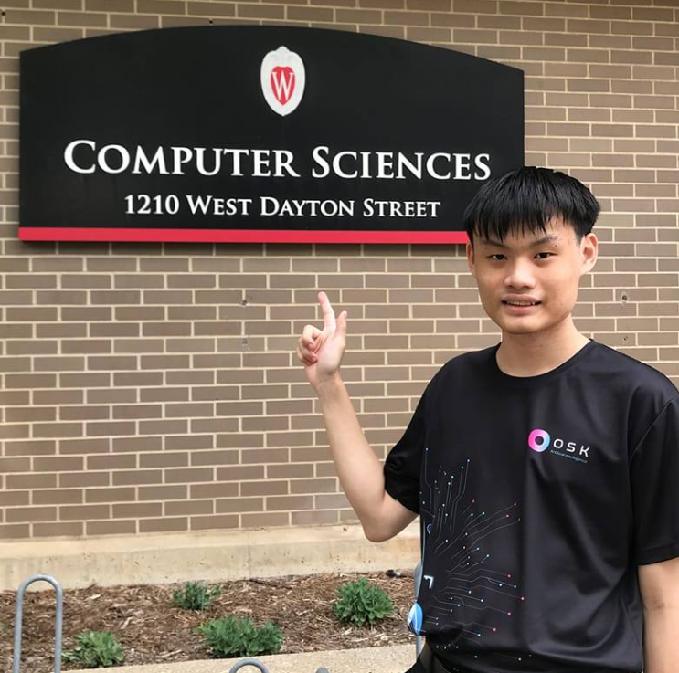
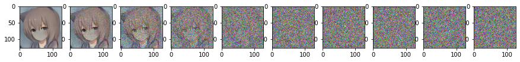

Deep Learning Researcher / Origami Artist
This section is still largely WIP due to most projects I have being in early stages or are confidential.
Generative Adversarial Network (GAN) is a class of generative models. By this, GANs are capable of generating flawless copies of a dataset akin to an AI artist. However, one big flaw on GANs is the anonimity of the output data, as GANs are trained to generate from random noise, which does not exhibit any pattern to correlate back to the input data.
During last summer, I have taken upon myself to uncover the "black box" nature of GANs by investigating the eigenvectors of StyleGAN's mapping space, which does in fact manipulate the expected outcome of our generations substantially.
Want to turn everything into anime? Well, several algorithm out there supports translation bewteen data. A notable one, CycleGAN translates between any 2 domains of data with ease! However, GANs are known for their whacky behaviors in training, namely "mode collapse", where the model cheats by reducing its generated variations.
A Denoising Diffusion Probablistic Model (DDPM) is in another class of generative models than GAN, and is the state-of-the-art algorithm for several AI generated arts. Even DALL-E has its backend covered by a DDPM model. Here, I've taken interest to implement a CycleGAN like approact to data translation. Hence, this projects is known as CycleDDPM
